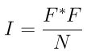

compute saed command
Syntax
compute ID group-ID saed lambda type1 type2 ... typeN keyword value ...
- ID, group-ID are documented in compute command
- saed = style name of this compute command
- lambda = wavelength of incident radiation (length units)
- type1 type2 ... typeN = chemical symbol of each atom type (see valid options below)
- zero or more keyword/value pairs may be appended
- keyword = Kmax or Zone or dR_Ewald or c or manual or echo
Kmax value = Maximum distance explored from reciprocal space origin
(inverse length units)
Zone values = z1 z2 z3
z1,z2,z3 = Zone axis of incident radiation. If z1=z2=z3=0 all
reciprocal space will be meshed up to Kmax
dR_Ewald value = Thickness of Ewald sphere slice intercepting
reciprocal space (inverse length units)
c values = c1 c2 c3
c1,c2,c3 = parameters to adjust the spacing of the reciprocal
lattice nodes in the h, k, and l directions respectively
manual = flag to use manual spacing of reciprocal lattice points
based on the values of the c parameters
echo = flag to provide extra output for debugging purposes
Examples
compute 1 all saed 0.0251 Al O Kmax 1.70 Zone 0 0 1 dR_Ewald 0.01 c 0.5 0.5 0.5 compute 2 all saed 0.0251 Ni Kmax 1.70 Zone 0 0 0 c 0.05 0.05 0.05 manual echo
fix saed/vtk 1 1 1 c_1 file Al2O3_001.saed fix saed/vtk 1 1 1 c_2 file Ni_000.saed
Description
Define a computation that calculates electron diffraction intensity as described in (Coleman) on a mesh of reciprocal lattice nodes defined by the entire simulation domain (or manually) using simulated radiation of wavelength lambda.
The electron diffraction intensity I at each reciprocal lattice point is computed from the structure factor F using the equations:

Here, K is the location of the reciprocal lattice node, rj is the position of each atom, fj are atomic scattering factors.
Diffraction intensities are calculated on a three-dimensional mesh of reciprocal lattice nodes. The mesh spacing is defined either (a) by the entire simulation domain or (b) manually using selected values as shown in the 2D diagram below.

For a mesh defined by the simulation domain, a rectilinear grid is constructed with spacing c*inv(A) along each reciprocal lattice axis. Where A are the vectors corresponding to the edges of the simulation cell. If one or two directions has non-periodic boundary conditions, then the spacing in these directions is defined from the average of the (inversed) box lengths with periodic boundary conditions. Meshes defined by the simulation domain must contain at least one periodic boundary.
If the manual flag is included, the mesh of reciprocal lattice nodes will defined using the c values for the spacing along each reciprocal lattice axis. Note that manual mapping of the reciprocal space mesh is good for comparing diffraction results from multiple simulations; however it can reduce the likelihood that Bragg reflections will be satisfied unless small spacing parameters <0.05 Angstrom^(-1) are implemented. Meshes with manual spacing do not require a periodic boundary.
The limits of the reciprocal lattice mesh are determined by the use of the Kmax, Zone, and dR_Ewald parameters. The rectilinear mesh created about the origin of reciprocal space is terminated at the boundary of a sphere of radius Kmax centered at the origin. If Zone parameters z1=z2=z3=0 are used, diffraction intensities are computed throughout the entire spherical volume - note this can greatly increase the cost of computation. Otherwise, Zone parameters will denote the z1=h, z2=k, and z3=l (in a global since) zone axis of an intersecting Ewald sphere. Diffraction intensities will only be computed at the intersection of the reciprocal lattice mesh and a dR_Ewald thick surface of the Ewald sphere. See the example 3D intestiety data and the intersection of a [010] zone axis in the below image.

The atomic scattering factors, fj, accounts for the reduction in diffraction intensity due to Compton scattering. Compute saed uses analytical approximations of the atomic scattering factors that vary for each atom type (type1 type2 ... typeN) and angle of diffraction. The analytic approximation is computed using the formula (Brown):

Coefficients parameterized by (Fox) are assigned for each atom type designating the chemical symbol and charge of each atom type. Valid chemical symbols for compute saed are:
- H: He: Li: Be: B:
- C: N: O: F: Ne:
- Na: Mg: Al: Si: P:
- S: Cl: Ar: K: Ca:
Sc: Ti: V: Cr: Mn: Fe: Co: Ni: Cu: Zn: Ga: Ge: As: Se: Br: Kr: Rb: Sr: Y: Zr: Nb: Mo: Tc: Ru: Rh: Pd: Ag: Cd: In: Sn: Sb: Te: I: Xe: Cs: Ba: La: Ce: Pr: Nd: Pm: Sm: Eu: Gd: Tb: Dy: Ho: Er: Tm: Yb: Lu: Hf: Ta: W: Re: Os: Ir: Pt: Au: Hg: Tl: Pb: Bi: Po: At: Rn: Fr: Ra: Ac: Th: Pa: U: Np: Pu: Am: Cm: Bk: Cf:tb(c=5,s=:)
If the echo keyword is specified, compute saed will provide extra reporting information to the screen.
Output info:
This compute calculates a global vector. The length of the vector is the number of reciprocal lattice nodes that are explored by the mesh. The entries of the global vector are the computed diffraction intensities as described above.
The vector can be accessed by any command that uses global values from a compute as input. See this section for an overview of LAMMPS output options.
All array values calculated by this compute are “intensive”.
Restrictions
This compute is part of the USER-DIFFRACTION package. It is only enabled if LAMMPS was built with that package. See the Making LAMMPS section for more info.
The compute_saed command does not work for triclinic cells.
Default
The option defaults are Kmax = 1.70, Zone 1 0 0, c 1 1 1, dR_Ewald = 0.01.
(Coleman) Coleman, Spearot, Capolungo, MSMSE, 21, 055020 (2013).
(Brown) Brown et al. International Tables for Crystallography Volume C: Mathematical and Chemical Tables, 554-95 (2004).
(Fox) Fox, O’Keefe, Tabbernor, Acta Crystallogr. A, 45, 786-93 (1989).